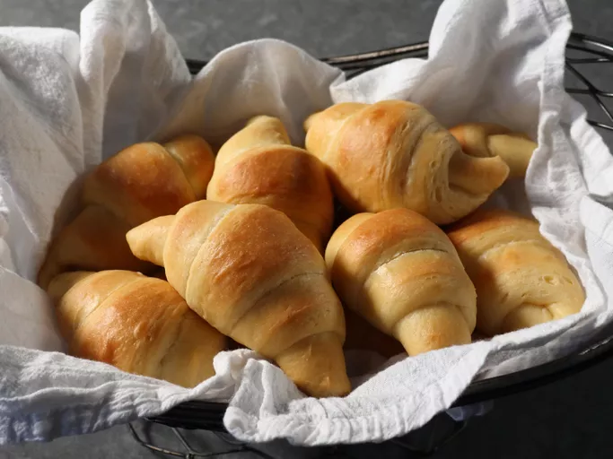

Candied Yams

Description
Butterhorn dinner rolls date all the way back to colonial times,
but I've streamlined the process to make this recipe easier for
new and inexperienced bakers. These classic dinner rolls are
light but rich, and slightly sweet. They're perfect for special
occasions or holiday dinners, alongside any main course.
Ingredients
- 1 package active dry yeast
- 1/4 cup warm water
- 1/2 cup unsalted butter
- 1 cup milk
- 3 tabblespoons white sugar
- 1 large egg yolk
Steps
-
Drain the syrup: This is a key move so your candied yams don't
turn out runny due to too much liquid in the baking dish.
Place the drained yams into a medium baking dish.
-
While the yeast is proofing, place butter in a saucepan with
milk and white sugar. Turn heat to medium and cook, stirring
occasionally, until butter melts and sugar dissolves, 3 to 4
minutes.
-
Remove from the heat and pour into a large mixing bowl; let
cool until just very warm to the touch and about 120 degrees F
(49 degrees C), 2 to 3 minutes.
-
Cover and let rise until almost doubled in size, about 1 hour.
-
Transfer dough back to a work surface and press it into a
1-inch thick circle. Flip over and continue pressing until
circle is 1/2-inch thick; use a rolling pin if needed to
achieve correct thickness. Use a pizza tool to cut dough into
12 equal wedges.